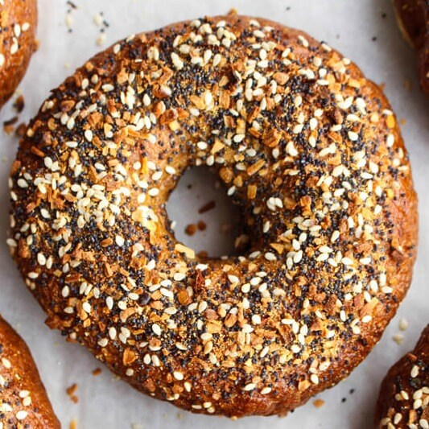
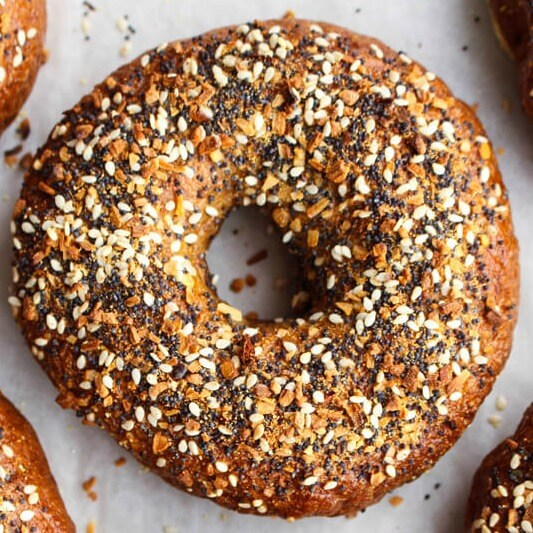

Brad's Recipe Blog
Bacon, Egg, and Cheese Sandwich
Description
A bacon egg and cheese bagel sandwich is an absolute classic breakfast meal. It takes a little bit of time to make, but it is completely worth it. This is a great meal to make on a weekend morning any time of the year.
Ingredients
 

- Bacon
- Everything Bagel
- Egg
- Cheese
Directions
Start out cooking the bacon because it will take the longest of all the ingredients to cook. Once it reaches a golden brown color take it out of the pan and put the slices onto the everything bagel. Next cook up the egg overeasy in the pan leaving the bacon grease inside of the pan. Once it is close to being done throw a slice of cheese onto it. Once it melts take it off and put it on top of the bacon on the bagel and enjoy.
Comment Section